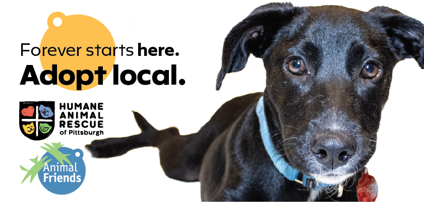
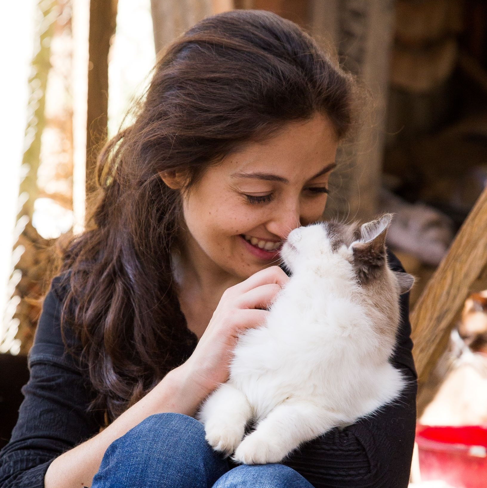
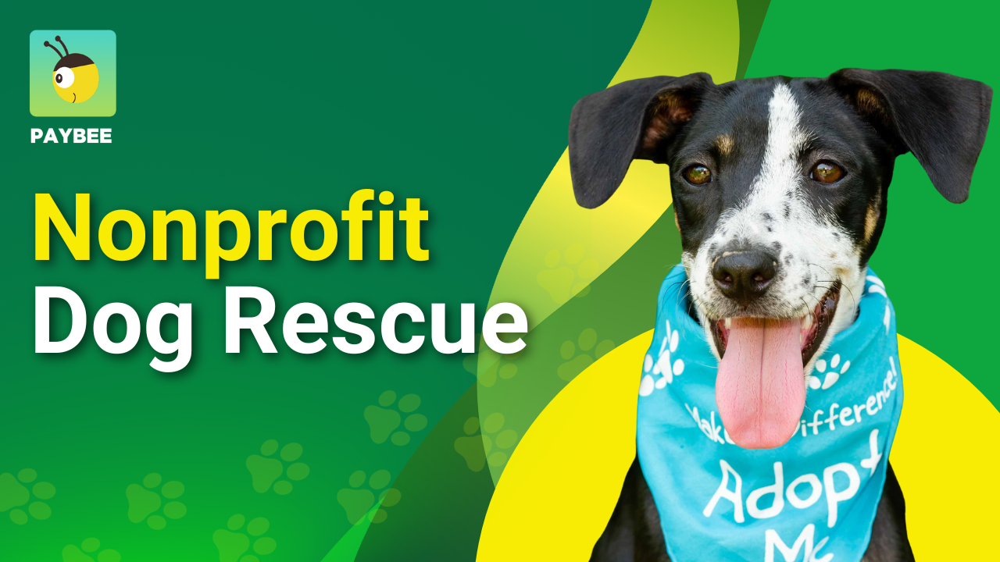
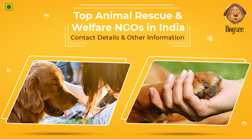

Nossa Missão

Resgatar, reabilitar e encontrar lares responsáveis para animais abandonados e em situação de risco, promovendo a conscientização sobre a guarda responsável e o bem-estar animal.

Ajude-nos a resgatar, cuidar e encontrar lares amorosos para animais
Conheça Nossos Animais
Resgatar, reabilitar e encontrar lares responsáveis para animais abandonados e em situação de risco, promovendo a conscientização sobre a guarda responsável e o bem-estar animal.

Ser referência nacional em proteção animal, reconhecida pela excelência no cuidado e pela efetividade na promoção da adoção, contribuindo para uma sociedade mais justa e compassiva com os animais.

Fundada em 2010 por um grupo de amantes de animais, a ONG Amigo Animal nasceu do desejo de combater o abandono e os maus-tratos. Começamos com um pequeno abrigo improvisado, cuidando de poucos animais resgatados.
Ao longo dos anos, expandimos nossas instalações e hoje contamos com um centro de reabilitação completo, atendendo centenas de animais mensalmente. Temos uma equipe dedicada de veterinários, cuidadores e mais de 300 voluntários ativos que dedicam seu tempo e amor para fazer a diferença.
Nossa organização é composta por profissionais qualificados e voluntários apaixonados pela causa animal. Trabalhamos de forma colaborativa e transparente, sempre focados no bem-estar e na proteção dos nossos amigos de quatro patas.
Acreditamos que a transparência é fundamental para manter a confiança de nossos doadores, voluntários e da sociedade. Por isso, disponibilizamos anualmente nossos relatórios de atividades e demonstrações financeiras.
Endereço: Rua dos Bichinhos, 456 - Bairro Feliz
São Paulo - SP - CEP: 09876-543
Telefone: (11) 2345-6789
WhatsApp: (11) 99876-5432
E-mail: contato@amigoanimal.org.br
Horário de Atendimento:
Segunda a Sexta: 9h às 17h
Sábado: 9h às 12h (Adoção)